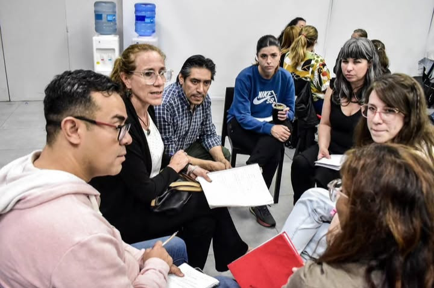

Siendo que los conflictos, en nuestra vida y experiencias, muchas veces nos han conducido a situaciones destructivas, peleas o malestares, ¿cómo podrían considerarse una oportunidad?

Previamente, siguiendo a Alzate, existen 4 fases en el ciclo de todo conflicto:
Fase 1
Actitudes y creencias
¿Cómo nos paramos ante un conflicto? El ciclo comienza con nuestras propias creencias y actitudes frente a cada situación problemática que se nos presenta.
Fase 2
El conflicto
La segunda fase ocurre con el acaecimiento mismo el conflicto.
Fase 3
La respuesta
¿Qué reacción solemos tener ante un conflicto? ¿Qué hacemos? Es en esta fase donde iniciamos un accionar que se ajustará a un mapa de creencias predeterminado y variará según cada persona. De ahí que existan diferentes formas a la hora de abordar una situación, tales como hablar, callar, gritar, bromear o tomar una conducta evitativa, entre otras.
Fase 4
El resultado
En este punto, tenemos la tendencia a reforzar nuestro sistema de creencias (fase 1) y a repetir patrones de conducta utilizados con anterioridad y frecuencia.